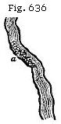

The Student’s Elements of Geology
Different Kinds of mineral Veins. — Ordinary metalliferous Veins or Lodes. — Their frequent Coincidence with Faults. — Proofs that they originated in Fissures in solid Rock. — Veins shifting other Veins. — Polishing of their Walls or “Slicken sides.” Shells and Pebbles in Lodes. — Evidence of the successive Enlargement and Reopening of veins. — Examples in Cornwall and in Auvergne. — Dimensions of Veins. — Why some alternately swell out and contract. — Filling of Lodes by Sublimation from below. — Supposed relative Age of the precious Metals. — Copper and lead Veins in Ireland older than Cornish Tin. — Lead Vein in Lias, Glamorganshire. — Gold in Russia, California, and Australia. — Connection of hot Springs and mineral Veins.
The manner in which metallic substances are distributed through the earth’s crust, and more especially the phenomena of those more or less connected masses of ore called mineral veins, from which the larger part of the precious metals used by man are obtained, are subjects of the highest practical importance to the miner, and of no less theoretical interest to the geologist.
On different Kinds of Mineral Veins.—The mineral veins with which we are most familiarly acquainted are those of quartz and carbonate of lime, which are often observed to form lenticular masses of limited extent traversing both hypogene strata and fossiliferous rocks. Such veins appear to have once been chinks or small cavities, caused, like cracks in clay, by the shrinking of the mass, during desiccation, or in passing from a higher to a lower temperature. Siliceous, calcareous, and occasionally metallic matters have sometimes found their way simultaneously into such empty spaces, by infiltration from the surrounding rocks. Mixed with hot water and steam, metallic ores may have permeated the mass until they reached those receptacles formed by shrinkage, and thus gave rise to that irregular assemblage of veins, called by the Germans a “stockwerk,” in allusion to the different floors on which the mining operations are in such cases carried on.
The more ordinary or regular veins are usually worked in vertical shafts, and have evidently been fissures produced by mechanical violence. They traverse all kinds of rocks, both
hypogene and fossiliferous, and extend downward to indefinite or unknown depths. We may assume that they correspond with such rents as we see caused from time to time by the shock of an earthquake. Metalliferous veins referable to such agency are occasionally a few inches wide, but more commonly three or four feet. They hold their course continuously in a certain prevailing direction for miles or leagues, passing through rocks varying in mineral composition.
That Metalliferous Veins were Fissures.—As some intelligent miners, after an attentive study of metalliferous veins, have been unable to reconcile many of their characteristics with the hypothesis of fissures, I shall begin by stating the evidence in its favour. The most striking fact, perhaps, which can be adduced in its support is, the coincidence of a considerable proportion of mineral veins with faults, or those dislocations of rocks which are indisputably due to mechanical force, as above explained (p. 87). There are even proofs in almost every mining district of a succession of faults, by which the opposite walls of rents, now the receptacles of metallic substances, have suffered displacement. Thus, for example, suppose a a, Fig. 629, to be a tin lode in Cornwall, the term lode being applied to veins containing metallic ores. This lode, running east and west, is a yard wide, and is shifted by a copper lode (b b) of similar width. The first fissure (a a) has been filled with various materials, partly of chemical origin, such as quartz, fluor-spar, peroxide of tin, sulphuret of copper, arsenical pyrites, bismuth, and sulphuret of nickel, and partly of mechanical origin, comprising clay and angular fragments or detritus of the intersected rocks. The plates of quartz and the ores are, in some places, parallel to the vertical sides or walls of the vein, being divided from each other by alternating layers of clay or other earthy matter. Occasionally the metallic ores are disseminated in detached masses among the vein-stones.
It is clear that, after the gradual introduction of the tin and other substances, the second rent (b b) was produced by another fracture accompanied by a displacement of the rocks along the plane of b b. This new opening was then filled with minerals, some of them resembling those in a a, as fluor-spar (or fluate of lime) and quartz; others different, the copper being plentiful and the tin wanting or very scarce. We must next suppose a third movement to occur, breaking asunder all the rocks along the line c c, Fig. 630; the fissure, in this instance, being only six inches wide, and simply filled with clay, derived, probably, from the friction of the walls
of the rent, or partly, perhaps, washed in from above. This new movement has displaced the rock in such a manner as to interrupt the continuity of the copper vein (b b), and, at the same time, to shift or heave laterally in the same direction a portion of the tin vein which had not previously been broken.
Again, in Fig. 631 we see evidence of a fourth fissure (d d), also filled with clay, which has cut through the tin vein (a a), and has lifted it slightly upward towards the south. The various changes here represented are not ideal, but are exhibited in a section obtained in working an old Cornish mine, long since abandoned, in the parish of Redruth, called Huel Peever, and described both by Mr. Williams and Mr. Carne.* The principal movement here referred to, or that of c c, Fig. 631, extends through a space of no less than 84 feet; but in this, as in the case of the other three, it will be seen that the outline of the country above, d, c, b, a, etc., or the geographical
* Geol. Trans., vol. iv, p. 139; Trans. Royal Geol. Society, Cornwall, vol. ii, p. 90
features of Cornwall, are not affected by any of the dislocations, a powerful denuding force having clearly been exerted subsequently to all the faults. (See p. 93.) It is commonly said in Cornwall, that there are eight distinct systems of veins, which can in like manner be referred to as many successive movements or fractures; and the German miners of the Hartz Mountains speak also of eight systems of veins, referable to as many periods.
Besides the proofs of mechanical action already explained, the opposite walls of veins are often beautifully polished, as if glazed, and are not unfrequently striated or scored with parallel furrows and ridges, such as would be produced by the continued rubbing together of surfaces of unequal hardness. These smoothed surfaces resemble the rocky floor over which a glacier has passed (see Fig. 106). They are common even in cases where there has been no shift, and occur equally in non-metalliferous fissures. They are called by miners “slicken-sides,” from the German schlichten, to plane, and seite, side. It is supposed that the lines of the striæ indicate the direction in which the rocks were moved.
In some of the veins in the mountain limestone of Derbyshire, containing lead, the vein-stuff, which is nearly compact, is occasionally traversed by what may be called a vertical crack passing down the middle of the vein. The two faces in contact are slicken-sides, well polished and fluted, and sometimes covered by a thin coating of lead-ore. When one side of the vein-stuff is removed, the other side cracks, especially if small holes be made in it, and fragments fly off with loud explosions, and continue to do so for some days. The miner, availing himself of this circumstance, makes with his pick small holes about six inches apart, and four inches deep, and on his return in a few hours finds every part ready broken to his hand.*
That a great many veins communicated originally with the surface of the country above, or with the bed of the sea, is proved by the occurrence in them of well-rounded pebbles, agreeing with those in superficial alluviums, as in Auvergne and Saxony. Marine fossil shells, also, have been found at great depths, having probably been ingulfed during submarine earthquakes. Thus, a gryphæa is stated by M. Virlet to have been met with in a lead-mine near Semur, in France, and a madrepore in a compact vein of cinnabar in Hungary.† In Bohemia, similar pebbles have been met with at the depth of 180 fathoms; and in Cornwall, Mr. Carne mentions
* Conybeare and Phil. Geol., p. 401, and Farey’s Derbyshire, p. 243.
† Fournet, Études sur les Dépôts Métallifères.
true pebbles of quartz and slate in a tin lode of the Relistran Mine, at the depth of 600 feet below the surface. They were cemented by oxide of tin and bisulphuret of copper, and were traced over a space more than twelve feet long and as many wide.* When different sets or systems of veins occur in the same country, those which are supposed to be of contemporaneous origin, and which are filled with the same kind of metals, often maintain a general parallelism of direction. Thus, for example, both the tin and copper veins in Cornwall run nearly east and west, while the lead veins run north and south; but there is no general law of direction common to different mining districts. The parallelism of the veins is another reason for regarding them as ordinary fissures, for we observe that faults and trap dikes, admitted by all to be masses of melted matter which have filled rents, are often parallel.
Fracture, Re-opening and Successive Formation of Veins.—Assuming, then, that veins are simply fissures in which chemical and mechanical deposits have accumulated, we may next consider the proofs of their having been filled gradually and often during successive enlargements.
Werner observed, in a vein near Gersdorff, in Saxony, no less than thirteen beds of different minerals, arranged with the utmost regularity on each side of the central layer. This layer was formed of two plates of calcareous spar, which had evidently lined the opposite walls of a vertical cavity. The thirteen beds followed each other in corresponding order, consisting of fluor-spar, heavy spar, galena, etc. In these cases the central mass has been last formed, and the two plates which coat the walls of the rent on each side are the oldest of all. If they consist of crystalline precipitates, they may be explained by supposing the fissure to have remained unaltered in its dimensions, while a series of changes occurred in the nature of the solutions which rose up from below: but such a mode of deposition, in the case of many successive and parallel layers, appears to be exceptional.
If a vein-stone consist of crystalline matter, the points of the crystals are always turned inward, or towards the centre of the vein; in other words, they point in the direction where there was space for the development of the crystals. Thus each new layer receives the impression of the crystals of the preceding layer, and imprints its crystals on the one which follows, until at length the whole of the vein is filled: the two layers which meet dovetail the points of their crystals the one into the other. But in Cornwall, some lodes
* Carne, Trans. Geol. Soc., Cornwall, vol. iii, p. 238.
occur where the vertical plates, or combs, as they are there called, exhibit crystals so dovetailed as to prove that the same fissure has been often enlarged. Sir H. De la Beche gives the following curious and instructive example (Fig. 632), from a copper-mine in granite, near Redruth.* Each of the plates or combs (a, b, c, d, e, f) is double, having the points of their crystals turned inward along the axis of the comb. The sides or walls (2, 3, 4, 5 and 6) are parted by a thin covering of ochreous clay, so that each comb is readily separable from another by a moderate blow of the hammer. The breadth of each represents the whole width of the fissure at six successive periods, and the outer walls of the vein, where the first narrow rent was formed, consisted of the granitic surfaces 1 and 7.
A somewhat analogous interpretation is applicable to many other cases, where clay, sand, or angular detritus, alternate with ores and vein-stones. Thus, we may imagine the sides of a fissure to be incrusted with siliceous matter, as Von Buch observed, in Lancerote, the walls of a volcanic crater formed in 1731 to be traversed by an open rent in which hot vapours had deposited hydrate of silica, the incrustation nearly extending to the middle.† Such a vein may then be filled with clay or sand, and afterwards re-opened, the new rent dividing the argillaceous deposit, and allowing a quantity of rubbish to fall down. Various metals and spars may then be precipitated from aqueous solutions among the interstices of this heterogeneous mass.
That such changes have repeatedly occurred, is demonstrated by occasional cross-veins, implying the oblique fracture of previously formed chemical and mechanical deposits. Thus, for example, M. Fournet, in his description of some mines in Auvergne worked under his superintendence, observes that the granite of that country was first penetrated by veins of granite, and then dislocated, so that open rents crossed both the granite and the granitic veins. Into such openings, quartz, accompanied by sulphurets of iron and arsenical pyrites, was introduced. Another convulsion then burst open the rocks along the old line of fracture, and the
* Geol. Rep. on Cornwall, p. 340.
† Principles, chap. xxvii, 8th edit., p. 422.
first set of deposits were cracked and often shattered, so that the new rent was filled, not only with angular fragments of the adjoining rocks, but with pieces of the older vein-stones. Polished and striated surfaces on the sides or in the contents of the vein also attest the reality of these movements. A new period of repose then ensued, during which various sulphurets were introduced, together with hornstone quartz, by which angular fragments of the older quartz before mentioned were cemented into a breccia. This period was followed by other dilatations of the same veins, and the introduction of other sets of mineral deposits, as well as of pebbles of the basaltic lavas of Auvergne, derived from superficial alluviums, probably of Miocene or even Older Pliocene date. Such repeated enlargement and re-opening of veins might have been anticipated, if we adopt the theory of fissures, and reflect how few of them have ever been sealed up entirely, and that a country with fissures only partially filled must naturally offer much feebler resistance along the old lines of fracture than anywhere else.
Cause of alternate Contraction and Swelling of Veins.—A large proportion of metalliferous veins have their opposite walls nearly parallel, and sometimes over a wide extent of country. There is a fine example of this in the celebrated vein of Andreasburg in the Hartz, which has been worked for a depth of 500 yards perpendicularly, and 200 horizontally, retaining almost everywhere a width of three feet. But many lodes in Cornwall and elsewhere are extremely variable in size, being one or two inches in one part, and then eight or ten feet in another, at the distance of a few fathoms, and then again narrowing as before. Such alternate swelling and contraction is so often characteristic as to require explanation. The walls of fissures in general, observes Sir H. De la Beche, are rarely perfect planes throughout their entire course, nor could we well expect them to be so, since they commonly pass through rocks of unequal hardness and different mineral composition. If, therefore, the opposite sides of such irregular fissures slide upon each other, that is to say, if there be a fault, as in the case of so many mineral veins, the parallelism of the opposite walls is at once entirely destroyed, as will be readily seen by studying Figs. 633 to 635.
Let a b, Fig. 633, be a line of fracture traversing a rock, and let a b, Fig. 634, represent the same line. Now, if we cut in two a piece of paper representing this line, and then move the lower portion of this cut paper sideways from a to a', taking care that the two pieces of paper still touch each other at
the points 1, 2, 3, 4, 5, we obtain an irregular aperture at c, and isolated cavities at d, d, d, and when we compare such figures with nature we find that, with certain modifications, they represent the interior of faults and mineral veins. If, instead of sliding the cut paper to the right hand, we move the lower part towards the left, about the same distance that it was previously slid to the right, we obtain considerable variation in the cavities so produced, two long irregular open spaces, f, f, Fig. 635, being then formed. This will serve to show to what slight circumstances considerable variations in the character of the openings between unevenly fractured surfaces may be due, such surfaces being moved upon each other, so as to have numerous points of contact.
Most lodes are perpendicular to the horizon, or nearly so; but some of them have a considerable inclination or “hade,” as it is termed, the angles of dip being very various. The course of a vein is frequently very straight; but if tortuous, it is found to be choked up with clay, stones, and pebbles, at points where it departs most widely from verticality. Hence at places, such as a, Fig. 636, the miner complains that the ores are “nipped,” or greatly reduced in quantity, the space for their free deposition having been interfered with in consequence of the pre-occupancy of the lode by earthy materials. When lodes are many fathoms wide, they are usually filled for the most part with earthy matter, and fragments of rock, through which the ores are disseminated. The metallic substances frequently coat or encircle detached pieces of rock, which our miners call “horses” or “riders.” That we should find some mineral veins which split into branches is also natural, for we observe the same in regard to open fissures.
Chemical Deposits in Veins.—If we now turn from the mechanical to the chemical agencies which have been instrumental in the production of mineral veins, it may be remarked that those parts of fissures which were choked up
with the ruins of fractured rocks must always have been filled with water; and almost every vein has probably been the channel by which hot springs, so common in countries of volcanoes and earthquakes, have made their way to the surface. For we know that the rents in which ores abound extend downward to vast depths, where the temperature of the interior of the earth is more elevated. We also know that mineral veins are most metalliferous near the contact of Plutonic and stratified formations, especially where the former send veins into the latter, a circumstance which indicates an original proximity of veins at their inferior extremity to igneous and heated rocks. It is moreover acknowledged that even those mineral and thermal springs which, in the present state of the globe, are far from volcanoes, are nevertheless observed to burst out along great lines of upheaval and dislocation of rocks.* It is also ascertained that all the substances with which hot springs are impregnated agree with those discharged in a gaseous form from volcanoes. Many of these bodies occur as vein-stones; such as silex, carbonate of lime, sulphur, fluor-spar, sulphate of barytes, magnesia, oxide of iron, and others. I may add that, if veins have been filled with gaseous emanations from masses of melted matter, slowly cooling in the subterranean regions, the contraction of such masses as they pass from a plastic to a solid state would, according to the experiments of Deville on granite (a rock which may be taken as a standard), produce a reduction in volume amounting to 10 per cent. The slow crystallisation, therefore, of such Plutonic rocks supplies us with a force not only capable of rending open the incumbent rocks by causing a failure of support, but also of giving rise to faults whenever one portion of the earth’s crust subsides slowly while another contiguous to it happens to rest on a different foundation, so as to remain unmoved.
Although we are led to infer, from the foregoing reasoning, that there has often been an intimate connection between metalliferous veins and hot springs holding mineral matter in solution, yet we must not on that account expect that the contents of hot springs and mineral veins would be identical. On the contrary, M. E. de Beaumont has judiciously observed that we ought to find in veins those substances which, being least soluble, are not discharged by hot springs—or that class of simple and compound bodies which the thermal waters ascending from below would first precipitate on the walls of a fissure, as soon as their temperature began slightly to diminish. The higher they mount towards the surface,
* See Dr. Daubeny’s Volcanoes.
the more will they cool, till they acquire the average temperature of springs, being in that case chiefly charged with the most soluble substances, such as the alkalies, soda and potash. These are not met with in veins, although they enter so largely into the composition of granitic rocks.*
To a certain extent, therefore, the arrangement and distribution of metallic matter in veins may be referred to ordinary chemical action, or to those variations in temperature which waters holding the ores in solution must undergo, as they rise upward from great depths in the earth. But there are other phenomena which do not admit of the same simple explanation. Thus, for example, in Derbyshire, veins containing ores of lead, zinc, and copper, but chiefly lead, traverse alternate beds of limestone and greenstone. The ore is plentiful where the walls of the rent consist of limestone, but is reduced to a mere string when they are formed of greenstone, or “toad-stone,” as it is called provincially. Not that the original fissure is narrower where the greenstone occurs, but because more of the space is there filled with vein-stones, and the waters at such points have not parted so freely with their metallic contents.
“Lodes in Cornwall,” says Mr. Robert W. Fox, “are very much influenced in their metallic riches by the nature of the rock which they traverse, and they often change in this respect very suddenly, in passing from one rock to another. Thus many lodes which yield abundance of ore in granite, are unproductive in clay-slate, or killas and vice versa.
Supposed relative Age of the different Metals.—After duly reflecting on the facts above described, we can not doubt that mineral veins, like eruptions of granite or trap, are referable to many distinct periods of the earth’s history, although it may be more difficult to determine the precise age of veins; because they have often remained open for ages, and because, as we have seen, the same fissure, after having been once filled, has frequently been re-opened or enlarged. But besides this diversity of age, it has been supposed by some geologists that certain metals have been produced exclusively in earlier, others in more modern times; that tin, for example, is of higher antiquity than copper, copper than lead or silver, and all of them more ancient than gold. I shall first point out that the facts once relied upon in support of some of these views are contradicted by later experience, and then consider how far any chronological order of arrangement can be recognised in the position of the precious and other metals in the earth’s crust.
* Bulletin, iv, p. 1278.
In the first place, it is not true that veins in which tin abounds are the oldest lodes worked in Great Britain. The government survey of Ireland has demonstrated that in Wexford veins of copper and lead (the latter as usual being argentiferous) are much older than the tin of Cornwall. In each of the two countries a very similar series of geological changes has occurred at two distinct epochs—in Wexford, before the Devonian strata were deposited; in Cornwall, after the Carboniferous epoch. To begin with the Irish mining district: We have granite in Wexford traversed by granite veins, which veins also intrude themselves into the Silurian strata, the same Silurian rocks as well as the veins having been denuded before the Devonian beds were superimposed. Next we find, in the same county, that elvans, or straight dikes of porphyritic granite, have cut through the granite and the veins before mentioned, but have not penetrated the Devonian rocks. Subsequently to these elvans, veins of copper and lead were produced, being of a date certainly posterior to the Silurian, and anterior to the Devonian; for they do not enter the latter, and, what is still more decisive, streaks or layers of derivative copper have been found near Wexford in the Devonian, not far from points where mines of copper are worked in the Silurian strata.
Although the precise age of such copper lodes can not be defined, we may safely affirm that they were either filled at the close of the Silurian or commencement of the Devonian period. Besides copper, lead, and silver, there is some gold in these ancient or primary metalliferous veins. A few fragments also of tin found in Wicklow in the drift are supposed to have been derived from veins of the same age.*
Next, if we turn to Cornwall, we find there also the monuments of a very analogous sequence of events. First, the granite was formed; then, about the same period, veins of fine-grained granite, often tortuous (see Fig. 614), penetrating both the outer crust of granite and the adjoining fossiliferous or primary rocks, including the coal-measures; thirdly, elvans, holding their course straight through granite, granitic veins, and fossiliferous slates; fourthly, veins of tin also containing copper, the first of those eight systems of fissures of different ages already alluded to, p. 607. Here, then, the tin lodes are newer than the elvans. It has, indeed, been stated by some Cornish miners that the elvans are in some instances posterior to the oldest tin-bearing lodes, but the observations of Sir H. de la Beche during the survey led him to an opposite conclusion, and he has shown how the
* Sir H. De la Beche, MS. Notes on Irish Survey.
cases referred to in corroboration can be otherwise interpreted.* We may, therefore, assert that the most ancient Cornish lodes are younger than the coal-measures of that part of England, and it follows that they are of a much later date than the Irish copper and lead of Wexford and some adjoining counties. How much later, it is not so easy to declare, although probably they are not newer than the beginning of the Permian period, as no tin lodes have been discovered in any red sandstone which overlies the coal in the south-west of England.
There are lead veins in Glamorganshire which enter the lias, and others near Frome, in Somersetshire, which have been traced into the Inferior Oolite. In Bohemia, the rich veins of silver of Joachimsthal cut through basalt containing olivine, which overlies tertiary lignite, in which are leaves of dicotyledonous trees. This silver, therefore, is decidedly a tertiary formation. In regard to the age of the gold of the Ural mountains, in Russia, which, like that of California, is obtained chiefly from auriferous alluvium, it occurs in veins of quartz in the schistose and granitic rocks of that chain, and is supposed by Sir R. Murchison, MM. Deverneuil and Keyserling to be newer than the syenitic granite of the Ural—perhaps of tertiary date. They observe that no gold has yet been found in the Permian conglomerates which lie at the base of the Ural Mountains, although large quantities of iron and copper detritus are mixed with the pebbles of those Permian strata. Hence it seems that the Uralian quartz veins, containing gold and platinum, were not formed, or certainly not exposed to aqueous denudation, during the Permian era.
In the auriferous alluvium of Russia, California, and Australia, the bones of extinct land-quadrupeds have been met with, those of the mammoth being common in the gravel at the foot of the Ural Mountains, while in Australia they consist of huge marsupials, some of them of the size of the rhinoceros and allied to the living wombat. They belong to the genera Diprotodon and Nototherium of Professor Owen. The gold of Northern Chili is associated in the mines of Los Hornos with copper pyrites, in veins traversing the cretaceo-oolitic formations, so-called because its fossils have the character partly of the cretaceous and partly of the oolitic fauna of Europe.† The gold found in the United States, in the mountainous parts of Virginia, North and South Carolina, and Georgia, occurs in metamorphic Silurian strata, as well as in auriferous gravel derived from the same.
* Report on Geology of Cornwall, p. 310.
† Darwin’s South America, p. 209, etc.
Gold has now been detected in almost every kind of rock, in slate, quartzite, sandstone, limestone, granite, and serpentine, both in veins and in the rocks themselves at short distances from the veins. In Australia it has been worked successfully not only in alluvium, but in vein-stones in the native rock, generally consisting of Silurian shales and slates. It has been traced on that continent over more than nine degrees of latitude (between the parallels of 30° and 39° S.), and over twelve of longitude, and yielded in 1853 an annual supply equal, if not superior, to that of California; nor is there any apparent prospect of this supply diminishing, still less of the exhaustion of the gold-fields.
Origin of Gold in California.—Mr. J. Arthur Phillips,* in his treatise ”On the Gold Fields of California,“ has shown that the ore in the gold workings is derived from drifts, or gravel clay, and sand, of two distinct geological ages, both comparatively modern, but belonging to different river-systems, the older of which is so ancient as to be capped by a thick sheet of lava divided by basaltic columns. The auriferous quartz of these drifts is derived from veins apparently due to hydrothermal agency, proceeding from granite and penetrating strata supposed to be of Jurassic and Triassic date. The fossil wood of the drift is sometimes beautifully silicified, and occasionally the trunks of trees are replaced by iron pyrites, but gold seems not to have been found as in the pyrites of similarly petrified trees in the drift of Australia.
The formation of recent metalliferous veins is now going on, according to Mr. Phillips, in various parts of the Pacific coast. Thus, for example, there are fissures at the foot of the eastern declivity of the Sierra Nevada in the state of that name, from which boiling water and steam escape, forming siliceous incrustations on the sides of the fissures. In one case, where the fissure is partially filled up with silica inclosing iron and copper pyrites, gold has also been found in the vein-stone.
It has been remarked by M. de Beaumont, that lead and some other metals are found in dikes of basalt and greenstone, as well as in mineral veins connected with trap-rock, whereas tin is met with in granite and in veins associated with the Plutonic series. If this rule hold true generally, the geological position of tin accessible to the miner will belong, for the most part, to rocks older than those bearing lead. The tin veins will be of higher relative antiquity for the same reason that the “underlying” igneous formations or
* Proc. Royal Soc., 1868, p. 294.
granites which are visible to man are older, on the whole, than the overlying or trappean formations.
If different sets of fissures, originating simultaneously at different levels in the earth’s crust, and communicating, some of them with volcanic, others with heated Plutonic masses, be filled with different metals, it will follow that those formed farthest from the surface will usually require the longest time before they can be exposed superficially. In order to bring them into view, or within reach of the miner, a greater amount of upheaval and denudation must take place in proportion as they have lain deeper when first formed and filled. A considerable series of geological revolutions must intervene before any part of the fissure which has been for ages in the proximity of the Plutonic rock, so as to receive the gases discharged from it when it was cooling, can emerge into the atmosphere. But I need not enlarge on this subject, as the reader will remember what was said in the 30th, 32nd, and 35th chapters on the chronology of the volcanic and hypogene formations.
{kind=link}
{kind=link}